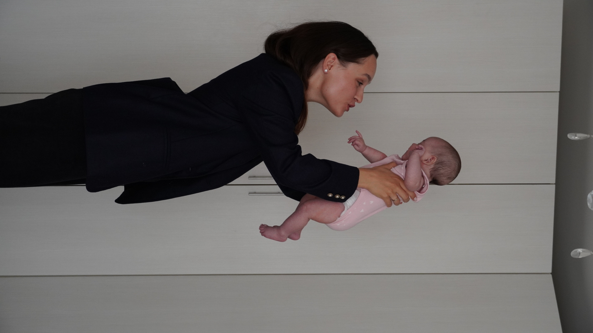
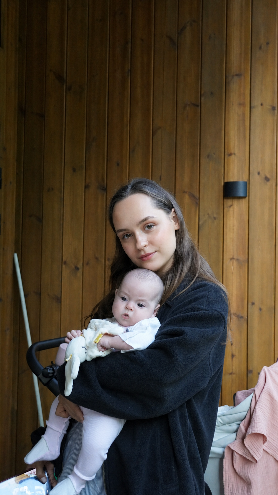
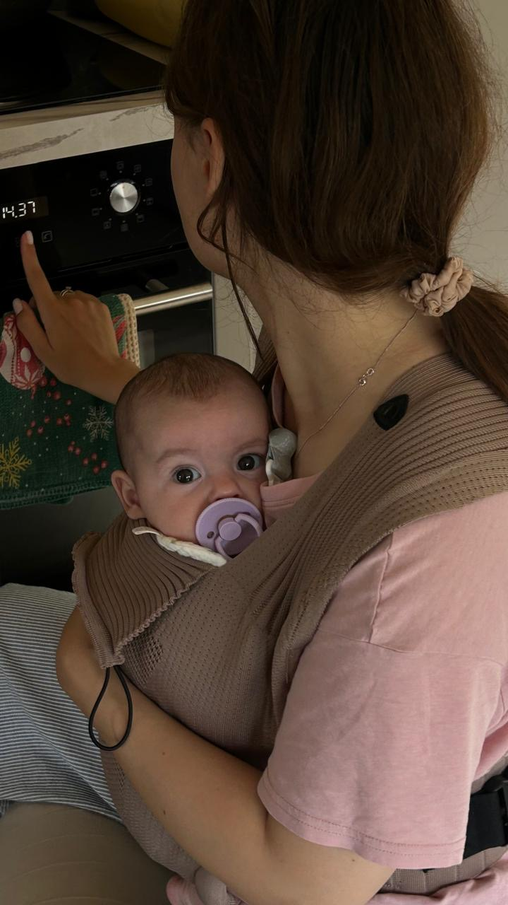
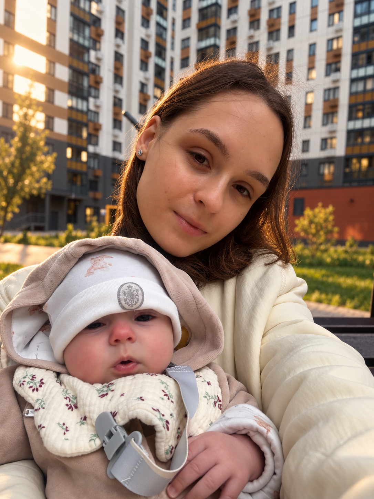

ТАЛКИНГ-ХЕД ВАЛЕРИИ
(реальное видео — оверлей ложится поверх)
overlay · valeria reels
Я думала, самое
сложное — недосып
Оказалось — нет
[ субтитр: реальная фраза про потерю себя ]

первые месяцы
Я как будто потеряла себя
Раньше я просто
брала и ехала
У ребёнка
свои планы
на эту жизнь

дорога до дачи — примерно час
когда ела?
когда спать?
какое настроение?
когда выезжать?
Истерика у неё
Истерика у меня
Истерика у мамы
Я привыкла всё
контролировать
А теперь план может измениться в любой момент

новая повседневность
Знать ≠ проживать

продолжение будет